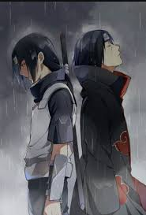
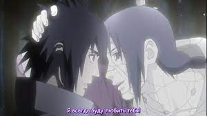
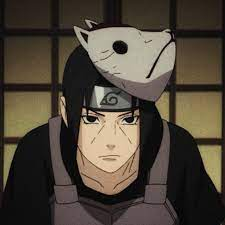
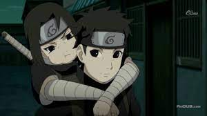
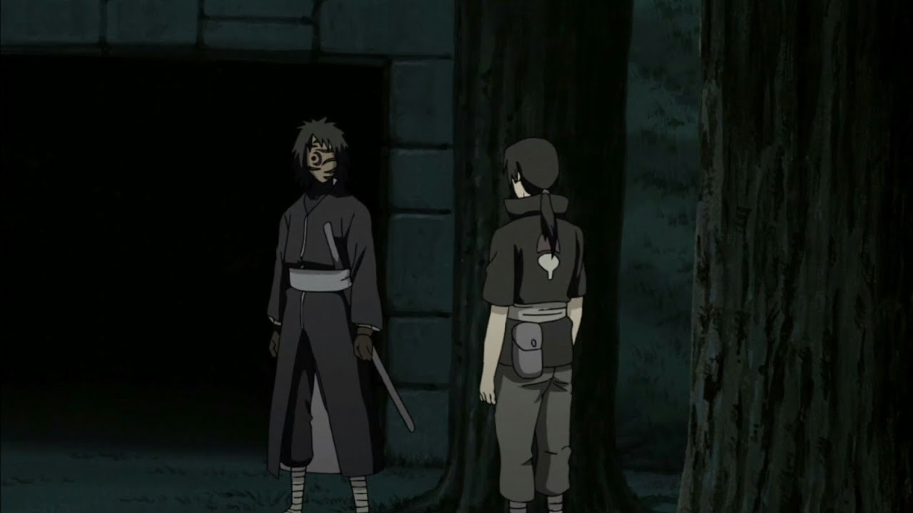
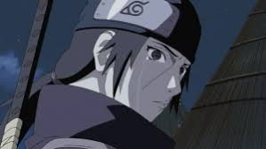

Itachi Uchiha
Итачи Учиха шиноби отступник, бывший член Анбу, был гением клана Учиха из Скрытого Листа. В молодости Итачи стал международным преступником, уничтожив весь свой клан, оставив в живых лишь своего младшего брата Саске. Впоследствии Итачи присоединился к международной преступной организации, Акацуки, деятельность которой порой приводила его к конфликтам с ниндзя Листа, включая Саске, стремящегося отомстить за свой клан. После смерти Итачи, выяснилось, что его мотивы были куда более сложными, чем казалось изначально — он верил, что все его действия были направлены на благо Саске и Конохи, и он оставался предан Скрытому Листу до самого конца.
Личность
С малых лет Итачи был тихим и проницательным ребенком и проявлял необычайную зрелость для своего возраста, а также знания, как действовать в любых обстоятельствах. В то же время Итачи порой показывал свойственную детям наивность во многих бытовых ситуациях, поэтому охотно учился у сверстников. Итачи жил на расстоянии от других, наблюдая за людьми и оценивая различные идеи, стараясь полностью понять их и не принимая ничего на веру. Из-за своей обособленности Итачи редко сближался с кем-либо, однако такой подход позволил ему мыслить и действовать без предрассудков, а также оценивать вещи непредвзято. В аниме Итачи ненамеренно обрел множество друзей и поклонников благодаря своей искренней заботе о других, даже несмотря на свою манеру держаться в стороне. Итачи много размышлял о природе шиноби, а также о родной деревне, её происхождении и будущем. В частности, поэтому он не приобрёл высокомерия из-за своих способностей и достижений, а свои взгляды не подстраивал под эмоции или желание личной выгоды. Также по этой причине он никогда не разделял фанатичную зацикленность на своём клане и гордыню от принадлежности к оному, что было общей чертой многих Учих; хотя Итачи любил свою семью и желал лучшего для неё, он понимал, что есть вещи намного важнее стремлений клана.
Хотя Итачи был по натуре пацифистом, он понимал, что его собственные потребности и чувства должны уходить на второй план перед более важными вещами; с этими убеждениями он становится шиноби. Итачи тренировался до изнеможения, чтобы достичь более высокого уровня как можно быстрее, и никогда не жаловался на трудности в жизни шиноби, мотивируясь простым желанием быть полезным для других. Его приверженность к тренировкам граничила с безрассудством, так, во время одиночных тренировок, он использовал методы, сопряженные со смертельным риском, такие как автоматы со множеством кунаев, от которых нужно было уворачиваться. Благодаря своему опыту ниндзя, Итачи подходил к своим проблемам с куда меньшей жестокостью, чем кто-либо другой, что удовлетворяло его миролюбие. Именно эти черты его характера стали причиной конфликта перед Резней Клана Учиха: он не хотел причинять боль своей семье и пытался найти мирное решение вопроса, но в то же время понимал, что наименее кровопролитным исходом будет истребление всего клана. Как только он принимает это решение, его обычно спокойные взаимоотношения с членами кланов становятся более натянутыми, он в открытую заявляет о своём недовольстве, критикуя их за решения, которые предрешили и их, и его судьбу.
Несмотря на всю ту боль, которую Итачи испытал при убийстве клана, он всё равно не винил руководство Конохи, которое поручило ему это задание; хотя он и не доверял Данзо лично, Итачи понимал, что его интересы направлены лишь на благополучие Конохи. Но Итачи — отчасти из-за необходимости присоединения к Акацуки, — сильно изменяется после уничтожения клана и практически не показывает никаких эмоций. Итачи начинает чаще использовать грубую силу для достижения целей и разрешает своему партнёру, Кисаме, использовать насилие, утверждая, что так необходимо сделать ради достижения целей Акацуки. Но Итачи всё же не полностью подавил свою миролюбивую натуру, из-за чего в некоторых ситуациях пытается обуздать Кисаме, если сопутствующий ущерб окажется слишком высоким для них или для других. И хотя Кисаме иногда был недоволен его действиями, он считал Итачи хорошим другом и всегда слушал его наставления. Недолго он состоял в партнёрах с Джузо, к которому, по-видимому, он испытывал немалое уважение и после его смерти вложил в его руки остатки Кубикирибочо как знак уважения к погибшему товарищу.
|  |
Защита Конохи всегда была на первом месте у Итачи, но не менее важной для него задачей было благополучие Саске. С самого рождения Саске, Итачи приглядывал за ним и наблюдал за его взрослением. Они вместе целыми днями гуляли в лесах Конохи и самостоятельно выполняли ничего не значащие миссии. Когда Итачи начал становиться опытным ниндзя и привлек к себе основное внимание отца, он порою все равно противился его пожеланиям в пользу Саске и тратил это время на своего младшего брата, делая его таким образом счастливее. Саске, желая быть похожим на старшего брата, часто просил его потренироваться с ним в искусстве ниндзя. Но Итачи почти никогда не тренировался с ним, а лишь щелкал его по лбу и обещал, что они потренируются в следующий раз. К сожалению, он никогда не сдерживал эти обещания.
Именно ради безопасности Саске, Итачи в конце-концов решился на полное уничтожение клана, полагая, что это бремя стоит того, если гарантирует выживание брата. Но даже при том, что он сделал это ради него, Итачи хотел понести наказание за содеянное, поэтому решил настроить Саске против себя, избрав его в качестве мстителя. Чтобы подтолкнуть Саске на этот путь, Итачи скрыл истинную причину своих действий и надел на себя маску человека, который никогда не любил своего брата. За этой маской, он сказал ему, что всё это время заботился о нём лишь из-за его глаз, с помощью которых сможет достигнуть Вечного Мангекьё Шарингана. Его вступление в Акацуки должно было лишь подтвердить его репутацию, а также при каждой встречи с Саске годы спустя он насмехался над его слабостью и поощрял его стать достаточно сильным, чтобы убить его. Суть его плана состояла в том, что после его смерти Саске прослывет героем. Итачи никогда не хотел, чтобы Саске узнал правду Резни Клана Учиха, и надеялся, что память о ненавистном старшем брате заставит его не поверить ей. |
|  | После того, как Итачи умер и воскрес, он узнает, что его планы по большей части провалились: Саске не становится героем и все равно добирается до правды о том, что сделал Итачи, из-за чего нацеливается на уничтожение Конохи. Наруто Узумаки указывает на главный изъян в этих планах: Итачи пытался просто манипулировать Саске, вместо того, чтобы быть честным с ним и верить в его собственные силы. Признавая свои ошибки, Итачи пытается быть самим собой, а не личностью, которую изображал из себя, поэтому более добро и открыто начинает относиться к другим, демонстрируя некоторую долю юмора даже в напряженных ситуациях. Он, наконец, вновь встречается с Саске и раскрывается перед ним, признавая все свои действия и показав ему те детали, которые он все еще не знал. Итачи извиняется перед Саске за то, что плохо исполнял обязанности старшего брата, а также предполагает, что если бы он всё рассказал с самого начала, Резни Клана Учиха можно было бы избежать. Под конец он говорит младшему брату, что не нуждается в его прощении, а также утверждает, что будет любить его несмотря ни на что. |
Прошлое
Итачи был первым ребёнком в семье Фугаку и Микото Учиха. Раннее детство Итачи было омрачено насилием: когда ему было четыре года, как раз началась Третья Мировая Война Шиноби, и он стал свидетелем сражений. Смерти и разрушения, которые он познал в столь раннем возрасте, нанесли Итачи психологическую травму, из-за чего он стал пацифистом. После встречи с Орочимару, который назвал жизнь без вечности бессмысленной, Итачи серьёзно задумался о том, как ему прожить свою. Он рос довольно замкнутым и предпочитал тренироваться вместо того, чтобы играть со сверстниками. В это время Итачи сдружился с воронами. В возрасте пяти лет он познакомился с Шисуи. Их взгляды оказались очень похожими, поэтому они быстро подружились. Их дружба была столь крепка, что они относились друг к другу как к братьям, и они часто тренировались вместе. Во время нападения Девятихвостого Демона-Лиса на Коноху Итачи отвечал за безопасность своего младшего брата, Саске, и без помощи взрослых он вместе с братом и Изуми Учихой эвакуировался в юго-восточное убежище. Нападение Девятихвостого обострило отношения между руководством Конохи и Учихами, поскольку последних подозревали в том, что именно они контролировали Лиса. Клан Учиха перебазировали на самую окраину деревни, изолировав их от остального населения и упростив тем самым слежку за ними.
Несмотря на свою миролюбивую натуру, Итачи был гением во всех искусствах ниндзя и считался одним из лучших шиноби своего поколения. Он получал наивысшие оценки за каждый предмет в Академии и легко осваивал любой навык, в том числе техники уровня джоунинов. Благодаря своему таланту он стал весьма популярен среди сверстников. Он интересовался историей всего мира, не ограничиваясь лишь знаниями об истории своих деревни и клана, тем самым начиная узнавать о многих действительно важных вещах. Благодаря своим обширным познаниям он был способен понять суть событий прошлого и предположить ход будущих, поэтому он все больше начинал волноваться о настоящем и о грядущем родной деревни. Его талант быстро заметили, и уже в 7 лет он закончил Академию шиноби лишь после года обучения, обогнав всех своих одноклассников. В аниме после выпуска он присоединяется к Команде 2, и, когда Итачи было 8 лет, они получили миссию сопровождать Даймё во время его ежегодного визита в Коноху. Во время этой миссии их конвой был атакован неизвестным в маске, который на глазах у Итачи убил Тенму Изумо, из-за чего у Итачи пробудился Шаринган, который он полностью освоил в том же возрасте. В 10 лет Итачи разрешили в одиночку участвовать в экзамене на Чуунина, и он успешно сдает его, получая соответствующий ранг.
|  | В одиннадцать лет Итачи стал членом Анбу. Семья гордилась успехами Итачи, для отца они были залогом процветания клана Учиха в будущем. Саске считал Итачи примером для подражания. Итачи провёл много времени с младшим братом, обучая его (хотя тренировались они довольно редко) и уделяя внимание, которое отец младшему ребёнку почти не оказывал. Но даже несмотря на близость братьев, Саске не удалось по настоящему понять Итачи, и он считал, что дистанция, сохранявшаяся между ними — следствие разрыва между их способностями, а не недовольство Итачи жизнью шиноби, наполненной бесконечными сражениями. В конце-концов, несправедливое отношение к клану Учиха в деревне подтолкнуло тех к идее государственного переворота. Фугаку, глава клана, а также главный организатор переворота, поощрял продвижение Итачи в рядах Анбу и хотел использовать сына как шпиона. Итачи, тем не менее, понимал, что задуманный Учихами переворот приведёт к вмешательству других государств, и, как следствие, к новой мировой войне шиноби, что никак не могло вызвать у него одобрение. Вместо того, чтобы поддержать клан, Итачи становится двойным агентом и докладывает о действиях клана Третьему Хокаге и Совету Конохи, в надежде, что они найдут способ разрешить конфликт мирно. |
|  | Итачи разделял бремя предательства клана с Шисуи. Но через некоторое время последний начал понимать, что о мире не может быть и речи. Шисуи попытался заставить лидеров клана Учиха начать переговоры с помощью своего Котоамацуками, но не успел, так как его правый глаз был украден Данзо Шимурой прежде, чем он смог что либо предпринять. Исчерпав все свои идеи, Шисуи отдаёт свой оставшийся глаз Итачи и просит его защитить деревню и клан, после чего спрыгивает с обрыва и тонет в реке Нака. Итачи испытывает боль после потери друга, достаточную для пробуждения Мангекьё Шарингана. На следующий день некоторые члены клана, уже заподозрив Итачи, открыто обвиняют его в смерти Шисуи и имитации самоубийства, из-за чего он выходит из себя и с лёгкостью побеждает их. С этого момента отношения Итачи с семьей становятся ещё более натянутыми, а его предупреждения о том, что стоит еще раз пересмотреть свои действия, проходят мимо их ушей. В 13 лет он получает повышение на капитана Анбу. |
|  |
Хотя Третий Хокаге всё ещё хотел провести переговоры с кланом Учиха, Данзо решил, что выхода, способного сохранить жизни Учих, уже не было. Он объяснил это Итачи и поставил его перед выбором: поддержать переворот клана, что, по его мнению, приведет к его полному истреблению Учих включая Саске, либо уничтожить клан собственными руками до того, как сам переворот начнется, и получить возможность пощадить младшего брата. Итачи выбрал своего брата.
Во время конечных приготовлений Итачи обнаруживает незнакомца в маске, который шпионил вокруг Конохи. Наблюдая за ним, он поверил, что этот человек действительно является Мадарой Учихой, готовым спровоцировать новый конфликт. Итачи встретился с ним и предложил следующее: он поможет "Мадаре" вырезать клан в отместку за предательство, совершенное по отношению к нему десятилетиями ранее, но взамен он должен пощадить саму деревню и Саске. Немного подумав, человек в маске, известный также как Тоби соглашается. |
|  | За одну ночь Итачи и Тоби уничтожили целый клан. Итачи лично взялся за убийство своих родителей. Несмотря на его предательство, они не держали зла на него, вместо этого за миг до своей смерти сказали ему, что гордятся сыном, и просят позаботиться о Саске. Мучимый скорбью от собственных действий, Итачи видел в Саске единственного человека, способного наказать его за эти преступления. Чтобы направить Саске на этот путь, он выступил в роли главного злодея, и именно с этой целью он позволил Саске найти его стоящим над телами их родителей и с помощью Цукуёми пытал его видениями их убийства. Саске сбежал в страхе от собственной смерти, но Итачи догнал его, дабы утвердить перед ним ложь, которую он придумал: он убил семью ради проверки своих способностей и сейчас намеревается проверить себя в бою против последнего оставшегося для него вызова — младшего брата, которого он на самом деле никогда не любил. Он призвал Саске становиться сильнее, чтобы убить его и отомстить за клан, для чего он и предлагает брату получить собственный Мангекьё Шаринган. Итачи ушел, однако был удивлен, когда Саске уже отправился в погоню за ним с только что пробужденным Шаринганом. Попытка Саске отомстить прямо сейчас провалилась, и он теряет сознание, но прежде видит слезы сожаления на лице Итачи. |
 |
Впоследствии, Итачи маскирует своего вороньего клона под члена Корня Анбу, чтобы донести до Данзо угрозу, что он выдаст все секреты Конохи её врагам, если тот посмеет тронуть Саске, понимая, что обещаниям Данзо нельзя полностью доверять. В качестве своего последнего дела перед уходом из деревни, Итачи посетил Третьего Хокаге и доложил о завершении своей миссии, к большому удивлению и печали последнего. Итачи просил Третьего присмотреть за Саске, и тот пообещал ему это. Итачи официально покинул деревню как предатель, но на самом деле с новой секретной миссией: внедриться в организацию Тоби, Акацуки, и удерживать ее от нападок на Коноху.
ЦитатыЖизнь человека определяться тем, что он считает истинным и правильным. Это и формирует нашу реальность. Вот только что такое истина? Всего-лишь понятие, и реальность может оказаться миражем. А быть может люди живут в мире собственных иллюзий?... люди в своей жизни крепко связаны с тем, что они принимают за правду... Вот как они определяют «реальность»... Но что значит «правда»? Неопределенное понятие. А это значит, что их «реальность», быть может, лишь мираж... Боль — это боль, как ее не назови. Разве она становится слабее от того, что ты думаешь, что она нереальна? Подражать стоит для того, чтоб расти и развиваться, а не для того, чтоб отказаться от самого себя. Никогда не судите о людях по их внешности или по своим личным ощущениям. Даже у самых сильных противников есть свои слабости. Может быть, идеалов не существует и во всём мире. Иногда две полностью противоположные вещи, оказываются разными сторонами одной монеты. И они могут преуспеть только тогда, когда работают вместе. |